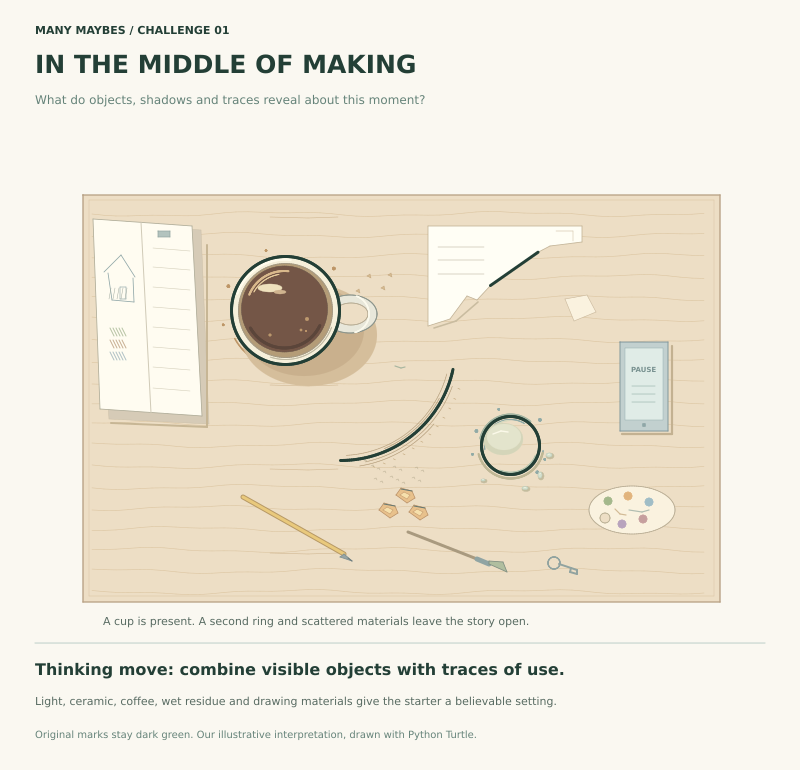

Same beginning. Different minds.
A few marks.
Different worlds.
Notice how each interpretation gives the same marks a different meaning.

A cultural park, seen from above
Change the viewpoint. Streets establish scale; tower terraces suggest height; seating and paths connect the theatre, pavilion and garden.

Beneath the surface
Change material and context. Reflected light, circular forms, fish, kelp and the seabed suggest an underwater world without prescribing one story.

In the middle of making
Combine objects with traces. A cup, coffee reflections, shadows, wet residue and drawing materials suggest an inhabited desk and leave its story open.
What did you see?
Send your interpretation for manual review. If selected with your permission, it can have its own gallery page and sharing link.
Share your possibility ↗Comments are not open during this pilot. Each interpretation can include its creator's explanation.